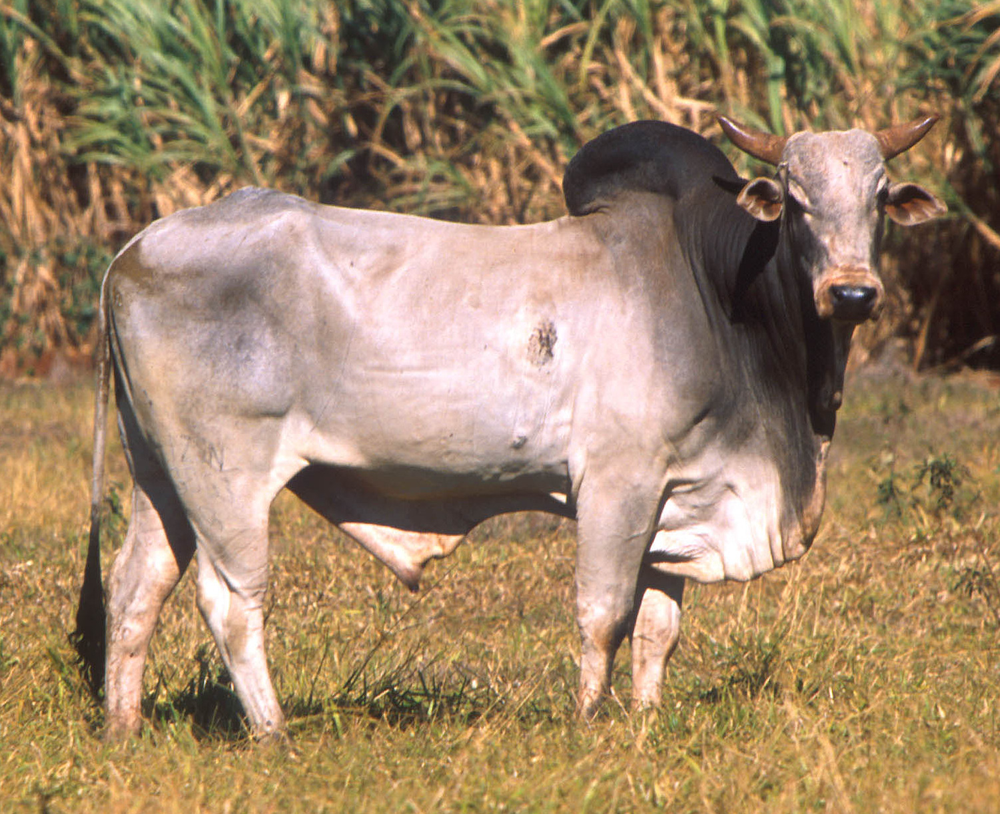
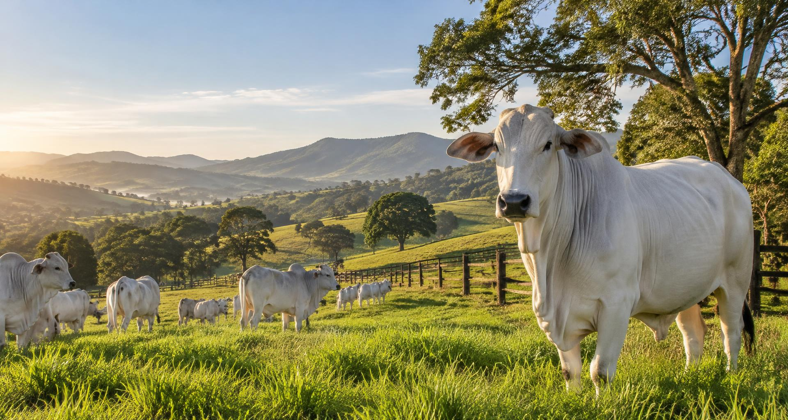
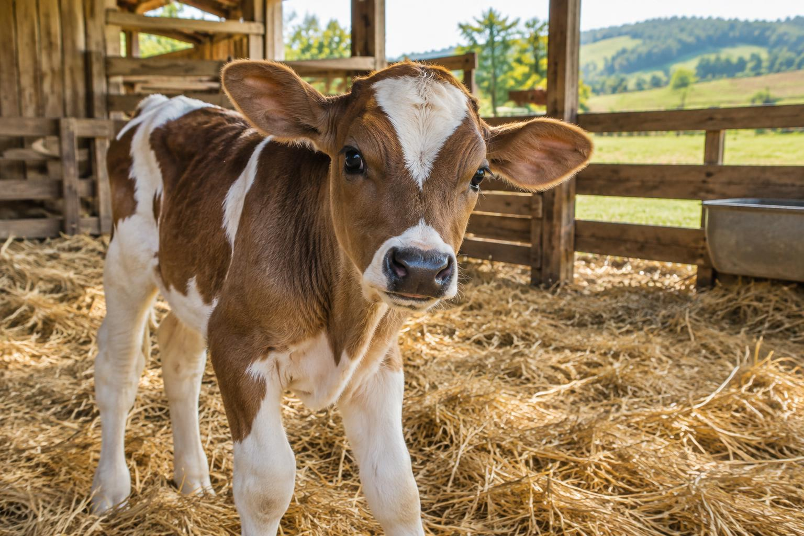
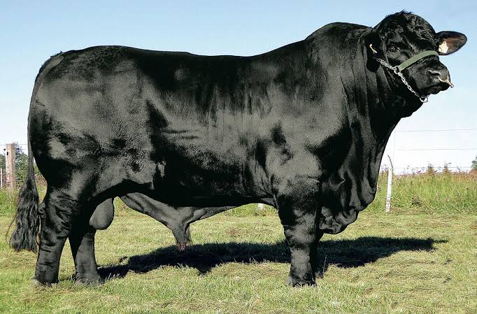
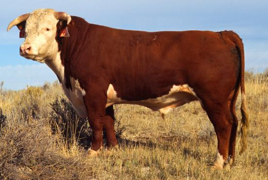
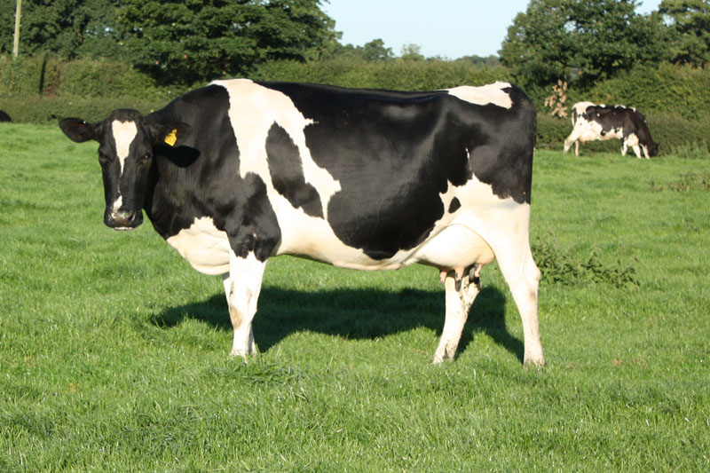
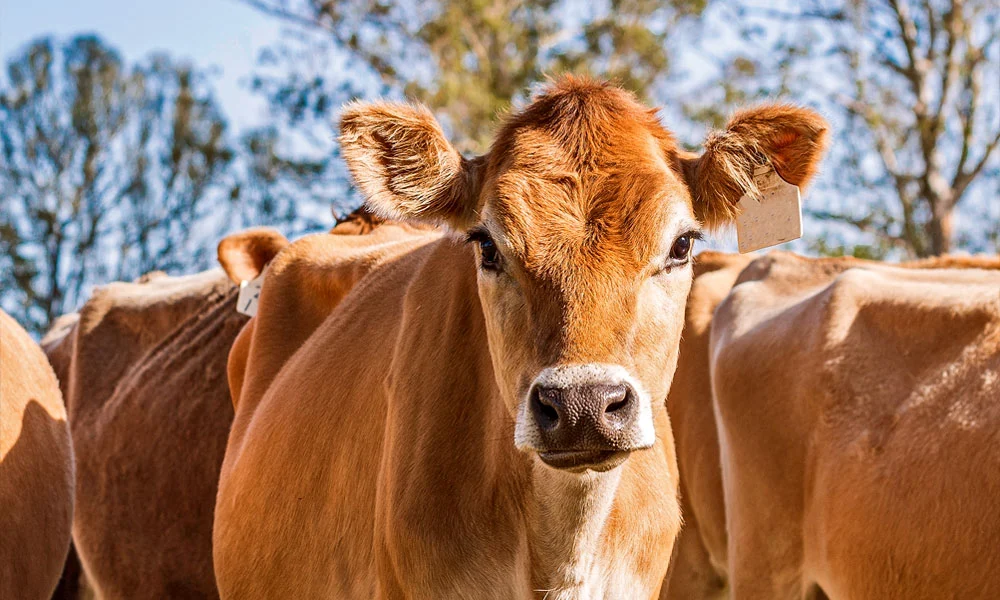
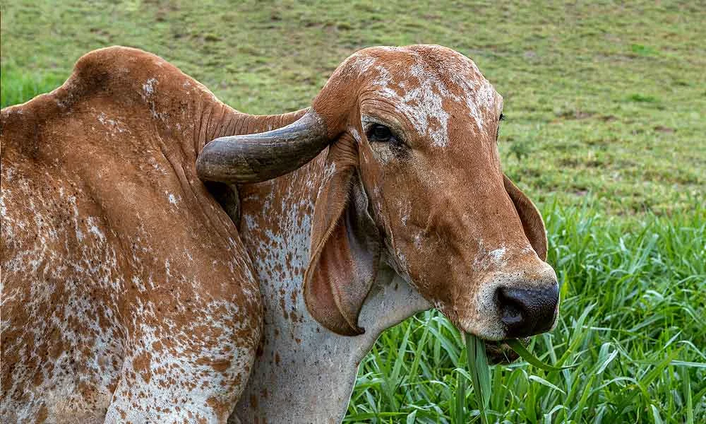
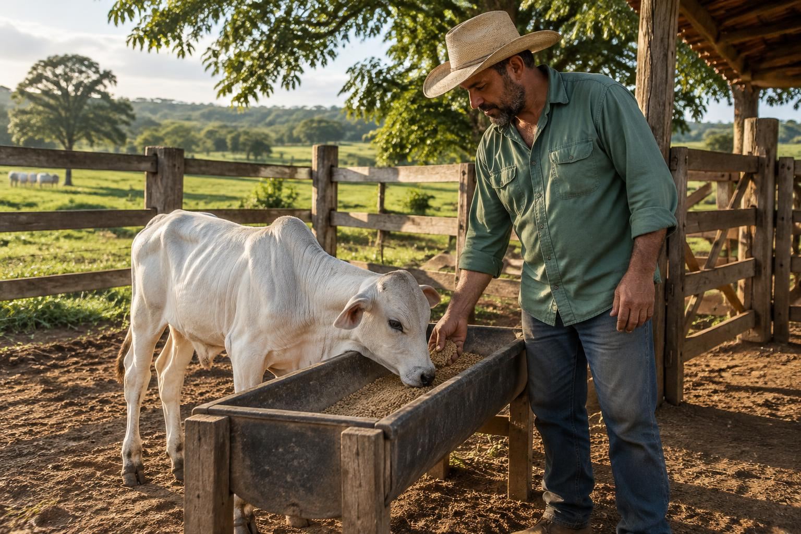

Nelore
Pelagem geralmente branca ou cinza, pele pigmentada, cupim evidente e orelhas curtas. Zebuíno adaptado ao calor, muito presente na pecuária brasileira.
Origem · Índia

Conhecimento que
nasce no campo.
Entre pastagens e currais, um olhar atento sobre a vida, o cuidado e o futuro da criação de bovinos.
Criar gado é mais do que produzir carne e leite. É conhecer os animais, respeitar suas necessidades e cuidar da terra. Este caderno reúne os conhecimentos da especialidade em uma jornada pela fazenda — com espaço para aprender também na prática.
A escolha de um bom novilho começa pela saúde e continua na estrutura do animal. A raça e o desempenho devem combinar com o clima, a alimentação disponível e o objetivo da criação.

Reconhecer as regiões do corpo ajuda a descrever os animais, observar lesões e conversar com quem trabalha no campo. Aqui estão 32 partes e regiões externas de um bovino macho.
O cupim é característico dos zebuínos, como o Nelore. Chifres podem estar ausentes; os testículos não estão presentes no boi castrado.Marrafa (topo da cabeça) · fronte (testa) · chanfro · focinho · narinas · olhos · orelhas · chifres · boca · ganacha (região da mandíbula) · pescoço · barbela.
Peito · cernelha · cupim · dorso · lombo · costado (região das costelas) · ventre · flanco · garupa · anca.
Paleta (ombro) · braço · antebraço · joelho (carpo) · coxa · jarrete · canela · casco.
Cauda · prepúcio (bainha).
Na fêmea, também é importante reconhecer o úbere, os tetos e a vulva; no macho inteiro, o escroto.
A aptidão, o porte e as características visíveis ajudam a reconhecer os bovinos. Conheça três raças de corte e três de leite. A aparência é uma pista — o registro confirma a raça.

Pelagem geralmente branca ou cinza, pele pigmentada, cupim evidente e orelhas curtas. Zebuíno adaptado ao calor, muito presente na pecuária brasileira.

Preto ou vermelho, naturalmente mocho, sem cupim e com corpo musculoso. Conhecido pela precocidade e pelo potencial de marmoreio da carne.

Corpo vermelho com face branca, geralmente também no ventre, peito e extremidades. Pode ter chifres ou ser mocho; boa aptidão para corte.

Grande porte, pelagem preta e branca ou vermelha e branca, corpo de tipo leiteiro e úbere desenvolvido. Alto potencial produtivo, com exigência de bom manejo e conforto térmico.

Menor porte, pelagem parda de tons variados e focinho escuro com contorno claro. Seu leite se destaca pelo teor de gordura e proteína.

Orelhas longas e pendentes, testa bem convexa, cupim e pelagem variada. O Gir selecionado para leite combina produção com adaptação tropical; participa da formação do Girolando.
Não existe uma dieta única para todo o rebanho. Idade, peso, saúde, qualidade do pasto e sistema de produção orientam o manejo. Água limpa deve estar disponível desde os primeiros dias.
Gado de corte: em geral, 6 a 8 meses.O desmame tradicional acontece frequentemente aos 7–8 meses. Condição da vaca, estação, peso e capacidade do bezerro de aproveitar a dieta orientam a decisão. Desmame precoce requer planejamento e alimentação específicos.
Gado leiteiro: em geral, 6 a 8 semanas ou mais.O desaleitamento depende principalmente do consumo consistente de concentrado, do desenvolvimento e da saúde — não só da idade. Um critério frequente é cerca de 0,8–1 kg de concentrado/dia por três dias consecutivos, ajustado ao protocolo da fazenda. Reduzir o leite gradualmente.

Uma novilha mansa não surge por acaso. Ela aprende, aos poucos, que a presença humana não significa ameaça.
Respeite a zona de fuga e nunca fique em pontos cegos, entre o animal e uma parede ou atrás dele. Docilidade não elimina o risco de acidentes.
A atividade real exige supervisão.
As instalações devem permitir alimentação, descanso, observação e manejo seguro. O projeto muda conforme a criação é a pasto, leiteira ou confinada.
Separar cocho e bebedouro ajuda a evitar que restos de alimento caiam na água, que respingos molhem a ração e que se concentrem sujeira, lama e animais em um único ponto.
Em um estábulo, posicioná-los em lados diferentes pode facilitar a higiene e distribuir a circulação. Mas isso não é uma regra universal: o importante é manter ambos acessíveis, limpos e sem disputas.
Distâncias excessivas podem dificultar o acesso, especialmente para bezerros ou animais com limitações. O projeto deve considerar drenagem, lotação e conforto — não obrigar o bovino a caminhar sem necessidade.
É a retirada ou inativação da função dos testículos, impedindo a reprodução. No corte, pode facilitar o manejo, reduzir comportamentos sexuais e favorecer o acabamento da carcaça. Não garante mansidão e pode alterar o desempenho; a decisão depende do sistema produtivo.
É um procedimento doloroso, que exige indicação, técnica apropriada, controle da dor e acompanhamento por médico-veterinário. Métodos cirúrgicos e alternativas, como imunocastração, precisam de avaliação profissional. Não é atividade prática para um desbravador realizar.
É a remoção dos chifres. Busca reduzir ferimentos entre animais e em pessoas e facilitar manejo e transporte. Sempre que possível, preferir genética mocha, evitando o procedimento.
Quando indicado, é preferível o amochamento precoce, antes de o botão do chifre se fixar ao crânio, geralmente nas primeiras semanas, até cerca de dois meses. A idade exata varia com o animal e o método. Anestesia local, analgesia e execução por profissional habilitado são indispensáveis. Descorna de adultos é mais invasiva e deve ser evitada.
Relatório de saúde do rebanho. Os sinais abaixo orientam a observação, não um diagnóstico. Isole com segurança os animais suspeitos, avise o responsável e procure o veterinário. Não medique por conta própria; respeite o período de carência para leite e carne.
| Problema | Sinais e sintomas | Como prevenir | Tratamento e conduta |
|---|---|---|---|
| Diarreia dos bezerros | Fezes líquidas, apatia, olhos fundos, fraqueza e desidratação. | Colostro adequado, higiene de mamadeiras e instalações, cama seca e lotes por idade. | Reposição de líquidos e eletrólitos; casos graves precisam de fluidoterapia veterinária. Identificar a causa; antibióticos não servem para toda diarreia. |
| Pneumonia | Tosse, febre, secreção nasal, respiração rápida ou difícil e redução do apetite. | Ventilação sem excesso de correntes de ar, pouca poeira, baixa lotação e redução de estresses; vacinação conforme o risco. | Avaliação imediata, correção do ambiente e medicamentos prescritos de acordo com a causa. |
| Mastite | Leite com grumos ou aspecto alterado, úbere quente, inchado ou dolorido. A forma subclínica pode não ter sinais visíveis. | Higiene de tetos e ordenha, equipamento regulado, cama limpa e monitoramento com CMT e contagem de células somáticas. | Diagnóstico e protocolo veterinário, com exames quando indicados. Separar leite impróprio e respeitar a carência. |
| Carrapatos e tristeza parasitária | Carrapatos visíveis; babesiose/anaplasmose podem causar febre, anemia, mucosas pálidas ou amareladas. Urina escura pode ocorrer na babesiose, mas não é típica da anaplasmose. | Controle estratégico dos vetores, quarentena e cuidados com agulhas e instrumentos, pois a anaplasmose também pode ser transmitida pelo sangue. | Medicamentos específicos e suporte conforme diagnóstico; anemia intensa pode exigir atendimento emergencial. Controle do carrapato orientado para reduzir resistência. |
| Verminoses | Perda de peso, baixo crescimento, pelagem sem brilho e, em alguns casos, diarreia ou anemia. | Manejo de pasto e lotação, nutrição adequada e controle com exames e estratégia definida pelo veterinário. | Antiparasitário escolhido para o caso, considerando resistência e carência; não repetir tratamentos indiscriminadamente. |
| Carbúnculo sintomático | Claudicação, febre, inchaço muscular com gás e evolução rápida, às vezes com morte súbita. | Vacinação contra clostridioses conforme bula e programa veterinário, incluindo as doses de reforço. | Emergência veterinária; o tratamento precoce pode ser tentado, mas a evolução costuma ser muito rápida. Não abrir carcaças; seguir orientação para destinação. |
| Brucelose | Abortos, especialmente no final da gestação, retenção de placenta e problemas reprodutivos. Pode ser silenciosa. | Vacinação de bezerras de 3–8 meses conforme PNCEBT, por profissional habilitado; testes e compra de animais com controle sanitário. | Zoonose: não tocar em fetos ou placentas sem proteção nem consumir leite cru. Positivos seguem destinação sanitária oficial; não há tratamento do rebanho como alternativa ao controle oficial. |
| Tuberculose bovina | Frequentemente sem sinais; nos casos avançados, emagrecimento, tosse persistente e linfonodos aumentados. | Testes oficiais, controle de entrada de animais, biossegurança e leite pasteurizado. | Zoonose: animais positivos têm destinação prevista no PNCEBT, sob controle oficial; não se tenta tratamento na propriedade. |
| Febre aftosa — suspeita sanitária | Vesículas e feridas na boca, tetos e pés, salivação, febre e dificuldade de caminhar. | Vigilância, biossegurança e controle do trânsito. O Brasil foi reconhecido em 2025 como livre de febre aftosa sem vacinação; seguir as orientações oficiais vigentes. | Notificar imediatamente o Serviço Veterinário Oficial; não movimentar animais, produtos ou materiais suspeitos. Não tentar resolver com tratamento caseiro. |
| Raiva dos herbívoros | Alterações de comportamento, dificuldade de engolir, falta de coordenação, paralisia e morte. | Vacinação em áreas de risco e vigilância de mordeduras de morcegos; controle dos transmissores apenas por equipe autorizada. | Não existe cura após o início dos sinais. Não tocar na boca ou saliva; comunicar imediatamente ao veterinário e ao serviço oficial. Exposição humana requer atendimento de saúde urgente. |
O calendário sanitário depende da região, categoria e risco. Vacinas, testes e tratamentos devem seguir o programa oficial, a bula e a orientação veterinária.
Um pequeno dicionário para entender as conversas no curral, na ordenha e na pastagem.
A leitura prepara você. Mas cuidar de bezerros e visitar uma propriedade são experiências que precisam acontecer de verdade, com autorização e supervisão.
Combine com um produtor, instrutor ou responsável uma rotina para cuidar de um ou mais bezerros por pelo menos um mês completo. Registre a identificação do animal, as datas de início e fim e o adulto supervisor.
| Período | O que acompanhar |
|---|---|
| Semana 1 | Conhecer a rotina, registrar o estado inicial, aprender a limpar utensílios e observar o animal. |
| Semana 2 | Ajudar na alimentação orientada; verificar água, cama, apetite e fezes todos os dias. |
| Semana 3 | Observar crescimento e comportamento; acompanhar a higiene e os registros sanitários. |
| Semana 4 e dias restantes |
Manter os cuidados até completar o mês; comparar registros e relatar o que aprendeu. |
Diário de cada dia: data, alimento oferecido, consumo observado, água, limpeza, sinais de saúde e orientação recebida. Não invente medições: anote peso ou temperatura apenas quando realmente aferidos por pessoa capacitada.
Visite uma propriedade onde se pratique a pecuária e escreva um relatório verdadeiro com pelo menos 300 palavras, destacando as atividades observadas e a sua experiência.
Peça autorização para fotografar e respeite as orientações de biossegurança. Não entre em áreas de isolamento nem manipule animais doentes, produtos veterinários ou equipamentos sem autorização.
Este exemplo é inteiramente fictício. Serve apenas para mostrar a organização de um relato. Substitua-o por uma descrição da visita que você realmente realizou, com suas observações e experiências.
Em uma visita imaginária a uma pequena propriedade dedicada à produção de leite e à criação de bezerras, fomos recebidos pelo responsável pela fazenda. Antes de entrar nas instalações, ele explicou as regras de segurança e pediu que permanecêssemos juntos, sem correr ou fazer barulho perto dos animais. Também mostrou como a limpeza dos calçados ajuda a reduzir a entrada de sujeira nas áreas de criação.
A primeira parada foi a área de pastagem. Observamos a divisão em piquetes e conversamos sobre a necessidade de ajustar o número de animais à quantidade de capim disponível. O produtor explicou que o descanso da pastagem permite a recuperação das plantas e que, na época seca, pode ser necessário complementar a alimentação com volumoso conservado. Vimos os bebedouros e percebemos que oferecer água não basta: é preciso verificar sua limpeza e seu funcionamento.
No bezerreiro, conhecemos a rotina de alimentação e a importância do colostro logo após o nascimento. O responsável comentou que cada bezerra é identificada e acompanhada individualmente. Sob supervisão, ajudamos apenas a organizar utensílios já limpos e observamos a troca da cama úmida. Não aplicamos medicamentos nem realizamos procedimentos nos animais. Aprendemos a prestar atenção ao apetite, à postura, à respiração e ao aspecto das fezes.
Depois, visitamos a sala de ordenha sem interferir no trabalho. A equipe demonstrou a higiene dos tetos e explicou que alterações no leite precisam ser investigadas. O leite era encaminhado ao resfriamento, e os registros permitiam acompanhar a produção. Também conversamos sobre o controle sanitário, a assistência veterinária e os cuidados com animais recém-chegados.
Na parte ambiental, observamos o armazenamento de alimentos e discutimos o destino dos dejetos. O produtor destacou que proteger a água, evitar o excesso de barro e manter o solo coberto são decisões que beneficiam tanto a propriedade quanto os animais.
O que mais chamou nossa atenção foi a ligação entre pequenas ações diárias e o resultado do trabalho. Uma cama seca, um bebedouro limpo e uma aproximação tranquila podem parecer detalhes, mas têm grande importância. Saímos entendendo que pecuária exige observação, planejamento e responsabilidade. Em uma visita real, eu registraria ainda as respostas do produtor, as tarefas que efetivamente acompanhei e minhas próprias dúvidas para continuar aprendendo.